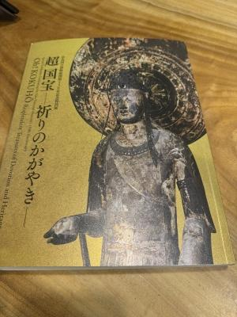
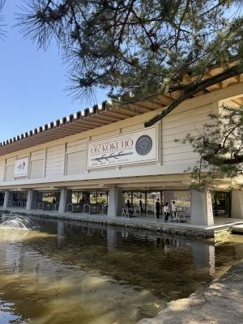
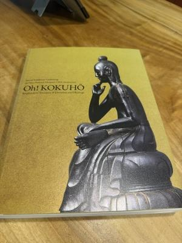
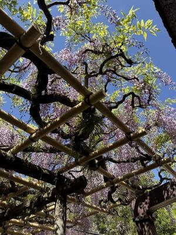
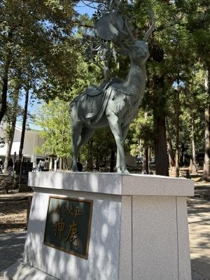
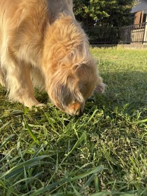

超国宝展を見て来たよ
昨日、奈良国立博物館に「超国宝ー祈りのかがやき」展を見に行って来ました。
・・・というか(汗)、連れて行ってもらいました〜(笑)。
日帰りドライブの旅で、道中ちょこっと話題にもなったのですが
作品展とか、展覧会とか・・・「見に行きたいなぁ。」と思うものがあっても
例えば行ってみたい観光地があっても、
私の場合1人でふらっと出かけるということはまずありません。
そこまでの情熱がないのか、旅自体がそこまで好きじゃない
のかもしれないんだけど・・・。
なので、いつも「・・・に行こう ! 」と誘ってくれる友だちがいなかったら
たぶんワタクシはどこにも行かず、誰とも楽しむこともなく
日々を過ごしていると思います。
・・・ま、家が好きなのでそれでもぜんぜんいいんですが・・・
出不精引きこもりのワタクシを、いつも連れ出してくれる友だちに感謝デス。
名古屋を朝9時半ごろに出発して、奈良についたのは多分お昼頃だったと思います。
学生の頃も時々みんなで車に乗って遊びに行ってたなぁ・・・と思い出しますヨ。
意外と奈良・京都のあたりは遠くないんだよね・・・。
ちょうどお昼時に着いたので、きっと飲食店は人がいっぱいだろう
と、いうことでまずは目的の奈良国立博物館へ。

どーん ! こちら、図録でっす。
厚さ3センチほどもあるんじゃね ? って感じの分厚い、重たい図録。
(・・・ピンボケやん)
法隆寺の百済観音さまを筆頭に
「うわー、これ教科書に載ってたー」って国宝の数々が
所狭しと展示されておりました。
・・・なかなかこれほどの大量の国宝を
いっぺんに見られる展覧会もないと思われましゅ。
10年分いっぺんに見た ! って感じ(笑)。
さすがに人もいっぱいだったけど、国宝をここまで近くで見られる、
こんな機会なかなかないぞー。

そんで、外に出て来て思った・・・
「超国宝」って、英訳すると「Oh ! KOKUYHO」なの ?
「Oh ! 」って・・・(笑)。
(こちらもびみょーにピンボケ)
↓

その後、せっかくなので春日大社へGo !
小学校の修学旅行で行った・・・ような気もするんだけど、全く記憶になし(汗)。
もしかしたら行ったことないかもしれないし、特別参拝コースへ・・・
春日大社の御神体 ? ってお山なのね・・・知らんかった。
やっぱり初めて行ったのかも(笑)、行けてよかったなぁ。

藤の花がとても綺麗で、境内(神社って境内って言うのかな)の至る所に咲いていました。
こちらは「砂ずりの藤」と言われる藤棚で、地面の砂にすれるほど花房が伸びるので
このような呼び方をするそうです。
昨日見たところ、そこまで長く伸びた房はなかったので、
まだ4月末だし、花の季節には少し早かったのかもしれないですね。

↑
春日大社の入り口あたりにあった鹿の銅像。
外国人観光客の写真スポットになってました。
なかなかにかっこいい鹿さんですよ(笑)。
春日大社から少し歩いて、東大寺へ。
・・・「少し」と言っても、春日大社や東大寺のある辺りは丘陵地というか、
市街地よりも一段高くなった場所なので、
けっこうな坂道を登るような感じになりました。
東大寺の東の裏側から入る形で、法華堂(三月堂)から二月堂へ。
それから大仏殿の脇を通って戒壇院の裏、正倉院の脇を通って戻って来ました。
はー・・・よく歩いたよ〜(笑)。
そんで、結局お昼ご飯を食べ損ねたよー(爆)。
急に決まったプチ日帰り旅行ですが、色んな意味の「おいしい ! 」が
ぎゅーっとつまった濃い〜ぃ1日となりました。
家に帰ったらお寿司が待ってたし ! (笑)
(お昼食べ損ねたけど)もー、お腹いっぱい〜 !

・・・しゃいきん、ひましゃんのおにわにぼんたたがいっぱいしゃくようになったでしゅよ。
ぼんたたはたべてもママがおこらないから、ひましゃんはほんたた、よくたべるでしゅ。
でもいっぱいありしゅぎて、ぼんたたでおなかがいっぱいになっちゃうでしゅよー。